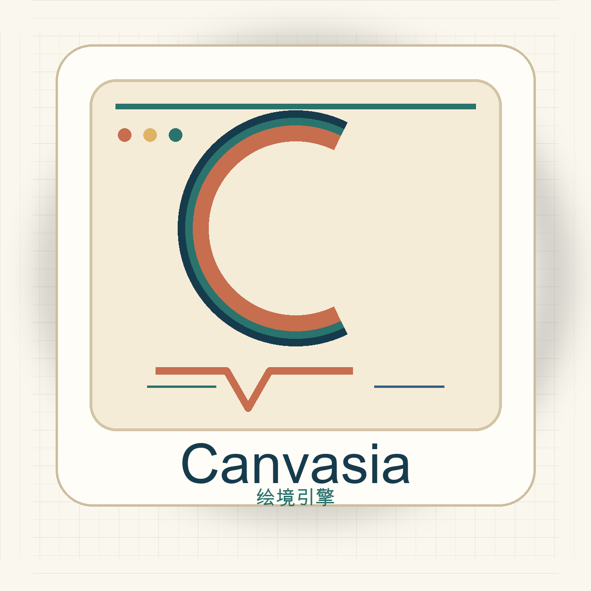
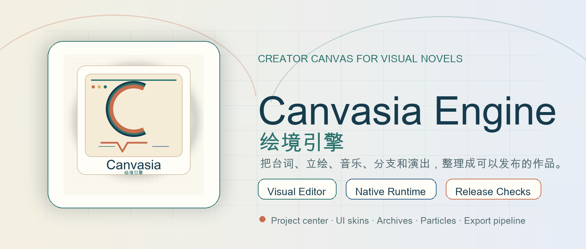
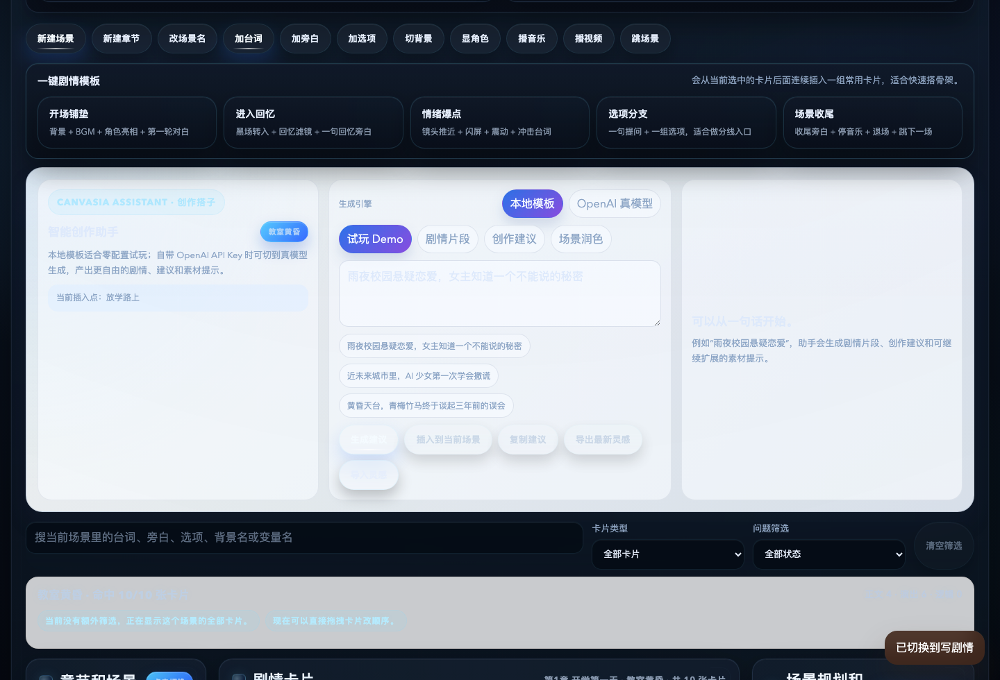
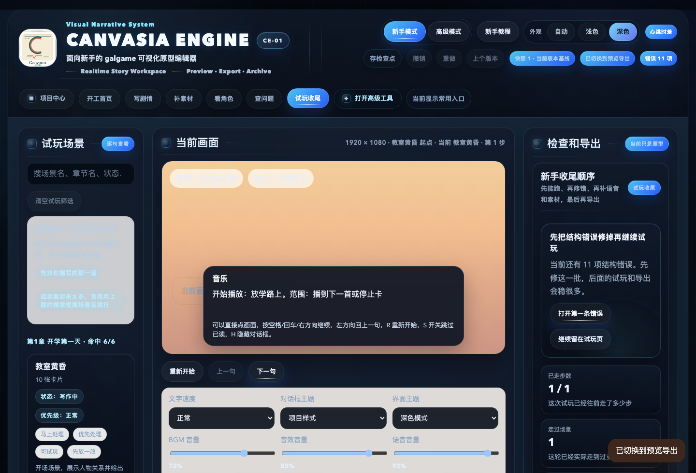

Scenes, cards, character presentation, choices, variables, conditions, graph inspection, and beginner/advanced modes.

Canvasia EngineNo-code visual novel engine
Build stories people can play.
Canvasia Engine is a creator-first visual novel and galgame engine prototype with a visual story editor, runtime exports, UI customization, archives, particles, i18n, and release-readiness checks.

No-codevisual workflow
3 runtimesweb, desktop, native
i18nzh-CN, en-US, ja-JP ready
Previewsource-available release
Why creators notice it
A production-minded VN toolkit, not just a script player.
Canvasia focuses on the everyday flow of making a visual novel: organizing assets, writing scenes, previewing quickly, polishing UI, exporting builds, and catching release problems before players do.
Web playable packages, desktop packages, native Runtime preview, save/load, settings, history, autoplay, and archives.
Project doctor, release gates, package reports, file integrity checks, 3D asset diagnostics, and automated smoke tests.
Screenshots
Editor surfaces designed for non-programmers.
The preview build keeps common creator actions visible while still leaving room for deeper production controls.

Story editor and assistant
Visual cards, scene structure, Canvasia Assistant, idea vault, and insertable generated story blocks.

Preview and export
Runtime preview, release checks, project repair guidance, and multi-platform export entry points.
Share the project
Trying Canvasia? Star the repo and build a tiny route.
The fastest demo path is one background, one character, one BGM track, a few lines of dialogue, one choice, and one simple ending. Once the story runs, add UI skins, archives, particles, voice, and exports.